1048A10 air cleaner filtering element - replace
- Path
- Procedures > 10 ENGINE > 1048 ENGINE AIR SUPPLY CIRCUIT > 1048A vacuum air circuit > 1048A10 air cleaner filtering element - replace
- Kind
- repair procedure (removal / refitting; the operation number is the code)
- Applies to
- all engines; all production periods
- Interactive page
- https://sloeber94.github.io/elrnDB-a147/en/#/3024822
Applies to: engines: 1.6 TS; all production periods
 Removing
Removing
 Refitting
RefittingPosition the vehicle on the ramp.
Proceed with the removal 5530B10 battery - r+r .
Proceed with the removal 5530B52 Battery DRIP TRAY/SUPPORT - R.R. .
Proceed with the removal 1048A40 sleeve from air cleaner to flow meter - r + r .
1. Remove the air cleaner assembly by releasing it from its mounts and disconnecting from the resonator.
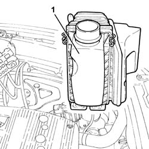
Applies to: engines: 1.6 TS; all production periods
Refitting
RemovingRefit the air cleaner assembly by securing to the lower mounts and connecting to the resonator.
Proceed with the refitting 1048A40 sleeve from air cleaner to flow meter - r + r .
Proceed with the refitting 5530B52 Battery DRIP TRAY/SUPPORT - R.R. .
Proceed with the refitting 5530B10 battery - r+r .
Remove the car from the ramp.
Applies to: engines: 2.0 TS; all production periods
Removing
RefittingPosition the vehicle on the ramp.
Proceed with the removal 5530B10 battery - r+r .
Proceed with the removal 5530B52 Battery DRIP TRAY/SUPPORT - R.R. .
Proceed with the removal 1048A40 sleeve from air cleaner to flow meter - r + r .
Proceed with the removal 7055B54 under-engine guard - r r .
1. Remove the air cleaner assembly by releasing from its mounts and disconnect from the resonator.
Applies to: engines: 2.0 TS; all production periods
Refitting
RemovingRefit the air cleaner assembly by securing to the lower supports and connecting to the resonator.
Proceed with the refitting 7055B54 under-engine guard - r r .
Proceed with the refitting 1048A40 sleeve from air cleaner to flow meter - r + r .
Proceed with the refitting 5530B52 Battery DRIP TRAY/SUPPORT - R.R. .
Proceed with the refitting 5530B10 battery - r+r .
Remove the car from the ramp.
Applies to: engines: 3.2 V6; all production periods
Removing
RefittingProceed with removal 5530B10 battery - r+r .
Proceed with removal 5530B52 Battery DRIP TRAY/SUPPORT - R.R. .
1. Disconnect the electrical connection from the air flow meter.
 | Name | Connector |
|---|---|---|
1 | Air flow meter |
2. Release the earth lead from the band on the air filter.
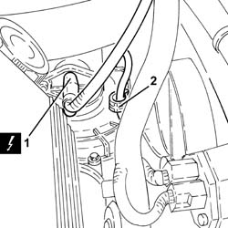
Applies to: engines: 3.2 V6; all production periods
1. Remove the air filter (1a) complete with air flow meter (1b), after releasing it from the cold air intake pipe and from the pins fastening it to the lower radiator crossmember.
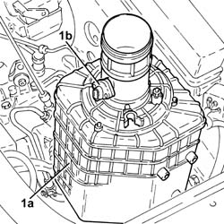
Applies to: engines: 3.2 V6; all production periods
Refitting
RemovingPlace the air filter, complete with flow meter, back in its housing, taking care to connect it to the cold air intake and then fit the pins on the air filter casing in the seats in the lower radiator crossmember.
Secure the earth lead to the collar on the air cleaner.
Connect the electrical connection to the air flow meter.
Proceed with refitting 5530B52 Battery DRIP TRAY/SUPPORT - R.R. .
Proceed with refitting 5530B10 battery - r+r .
Applies to: engines: 1.9 JTD 8V; all production periods
Removing
Refitting5530B52 Battery DRIP TRAY/SUPPORT - R.R.
1. Disconnect the electrical connection from the air flow meter.
| Name | Connector |
|---|---|---|
1 | Air flow meter |
2. Disconnect collar (2a), prise up from the lower retaining pins (2b), release the filter casing from the cold air pipe outlet and then remove the air cleaner case assembly (2c).
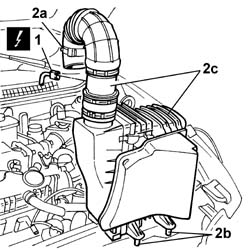
Applies to: engines: 1.9 JTD 8V; all production periods
Refitting
RemovingFit the air cleaner casing complete with filter element.
Secure the lower pins, connect the cold air pipe to the outlet and connect the air delivery pipe to the turbocharger.
Connect the electrical connection to the air flow meter.
| Name | Connector |
|---|---|---|
- | Air flow meter |
Applies to: engines: 1.9 JTD 16V; all production periods
Removing
RefittingPosition the vehicle on the ramp.
Proceed with removal 7025A12 Engine front sound insulation COVER - R.R. .
Proceed with removal 7025A14 Bonnet LID - R.R. .
Proceed with removal 1016A10 sound-proofing cover - r + r .
Proceed with removal 7055B54 under-engine guard - r r .
Proceed with removal 5530B10 battery - r+r .
Proceed with removal 5530B52 Battery DRIP TRAY/SUPPORT - R.R. .
1. Undo the bolts (1a) and move the bracket (1b) complete with turbocharger vane position actuator solenoid valve (1c) away from the air filter.
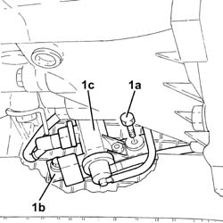
Applies to: engines: 1.9 JTD 16V; all production periods
1. Undo the bolt fixing the cold air intake to the crossmember.
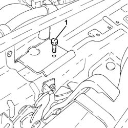
Applies to: engines: 1.9 JTD 16V; all production periods
1. Loosen the band (1a) and remove the cold air intake (1b).
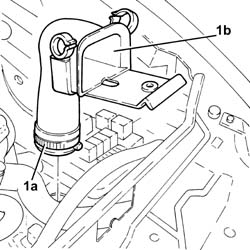
Applies to: engines: 1.9 JTD 16V; all production periods
1. Disconnect the electrical connection from the air flow meter.
| Name | Connector |
|---|---|---|
1 | Air flow meter |
2. Loosen the band fastening the corrugated hose to the air flow meter.
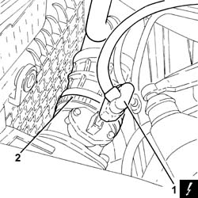
Applies to: engines: 1.9 JTD 16V; all production periods
1. Loosen the band and disconnect the upper coolant inlet hose to the radiator thermostat side.
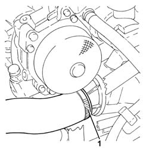
Applies to: engines: 1.9 JTD 16V; all production periods
1. Disconnect the electrical connections from the engine cooling fan resistor.
| Name | Connector |
|---|---|---|
1 | Engine fan adjustment resistor |
2. Disconnect the electrical connection from the engine fan motor.
| Name | Connector |
|---|---|---|
2 | Engine electric fan motor |
Move the junction unit complete with electrical wiring and container aside.
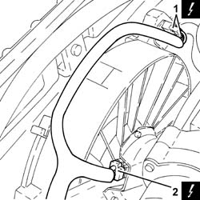
Applies to: engines: 1.9 JTD 16V; all production periods
1. Remove the air filter (1a) complete with air flow meter (1b).
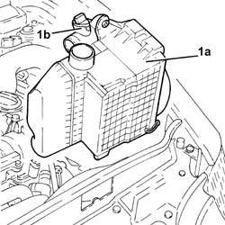
Applies to: engines: 1.9 JTD 16V; all production periods
1. Undo the bolts (1a) and separate the air flow meter (1b) from the air filter.
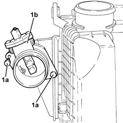
Applies to: engines: 1.9 JTD 16V; all production periods
Refitting
RemovingPlace the air filter cover, complete with air flow meter, back in its housing and secure it using the bolts.
Replace the air filter, complete with air flow meter, in its housing.
Refit the additional junction unit complete with electrical wiring and container in its housing.
Connect the electrical connection to the engine fan motor.
Connect the electrical connections to the resistor for the engine cooling fan.
Connect the upper coolant inlet hose to the radiator, thermostat side, and tighten the band.
Tighten the band securing the corrugated hose to the air flow meter.
Connect the electrical connection to the air flow meter.
Place the cold air intake in its housing and tighten the band.
Tighten the bolt fixing the cold air intake to the crossmember.
Refit in its seating the bracket complete with turbocharger vane position actuator solenoid, then secure it with the bolts.
Proceed with refitting 5530B52 Battery DRIP TRAY/SUPPORT - R.R. .
Proceed with refitting 5530B10 battery - r+r .
Proceed with refitting 7055B54 under-engine guard - r r .
Refill the engine cooling system with coolant 0010T20 coolant change .
Proceed with refitting 1016A10 sound-proofing cover - r + r .
Proceed with refitting 7025A14 Bonnet LID - R.R. .
Proceed with refitting 7025A12 Engine front sound insulation COVER - R.R. .
Position the vehicle on the ramp.
Topics linked from this page (11)
- 0010T20 coolant change
- 1016A10 sound-proofing cover - r + r
- 1048A40 sleeve from air cleaner to flow meter - r + r
- 5530B10 battery - r+r
- 5530B52 Battery DRIP TRAY/SUPPORT - R.R.
- 7025A12 Engine front sound insulation COVER - R.R.
- 7025A14 Bonnet LID - R.R.
- 7055B54 under-engine guard - r r
- K41 Air flow meter ( ENGINE )
- N11 Engine electric fan motor
- O10 Engine fan adjustment resistor
Topics that link to this page (32)
- B13 ENGINE STARTS WITH DIFFICULTY'
- X01 EXCESSIVE FUEL CONSUMPTION
- X05 EXCESSIVE OIL CONSUMPTION
- 1004B10 power unit with manual gearbox - r + r
- 1016D20 left cylinder head - r + r and replace gasket
- 1020D26 flywheel side oil seal cover - r+r
- 1020D36 flywheel end oil seal - replace for manual gearbox with hydraulic selection versions
- 1020D38 flywheel side oil seal - replace
- 1020D51 crank shaft rear mount - apply silicone to mating surfaces
- 1024B10 engine flywheel - r + r for versions with manual gearbox
- 1024B11 engine flywheel - r r for manual gearbox with hydraulic selection versions
- 1088B20 engine cooling radiator - r + r
- 1088E10 radiator cooling fan - r + r
- 1810A20 clutch - r + r
- 1810A28 clutch - r r for manual gearbox with hydraulic selection versions
- 1820A24 thrust bearing linkage - r + r
- 2110A10 manual gearbox and differential - r + r
- 2110A11 manual gearbox with differential - r r for versions with hydraulic selection
- 2110C22 gear input shaft seals - r r
- 2127C25 PIPE FROM SELECTION SOLENOID VALVE TO ENGAGEMENT/SELECTION ACTUATOR - R.R.
- 2127C26 PIPE FROM ODD GEARS ENGAGEMENT SOLENOID VALVE TO SELECTOR/ENGAGEMENT ACTUATOR - R.R.
- 2127C27 PIPE FROM GEAR ENGAGEMENT SOLENOID VALVE TO ENGAGEMENT/SELECTOR ACTUATOR - R.R.
- 2127C28 PIPE FROM CLUTCH ENGAGEMENT SOLENOID VALVE TO CLUTCH HYDRAULIC ACTUATOR - R.R.
- 2127C40 hydraulic speed selection hydraulic actuator unit and clutch - r r
- 2127C45 CLUTCH OPERATING CYLINDER, of electrohydraulic selection - R.R .
- 2127C48 GEAR ENGAGEMENT ELECTRO-HYDRAULIC SELECTION DEVICE - R.R.
- 2127C52 EVEN AND UNEVEN GEAR ENGAGEMENT SOLENOID VALVES - R.R.
- 2127C56 CLUTCH SOLENOID VALVE - R.R.
- 2127E40 hydraulic selection gearbox speed selection position sensor - r r
- 2127E42 hydraulic selection gearbox shift position sensor - r r
- 2127E52 hydraulic selection gearbox input shaft speed sensor - r r
- 2127E94 wiring for manual gearbox hydraulic selection system on hydraulic selection unit r r or change